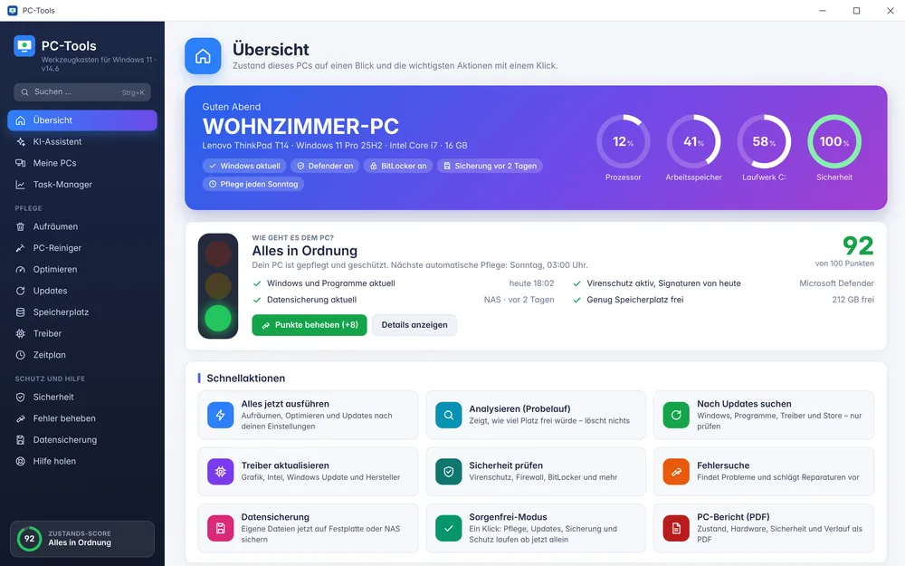
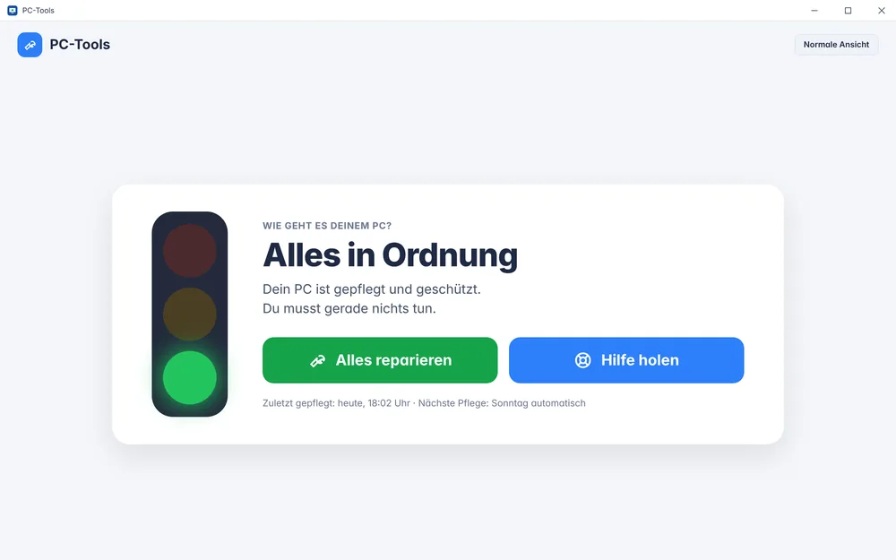
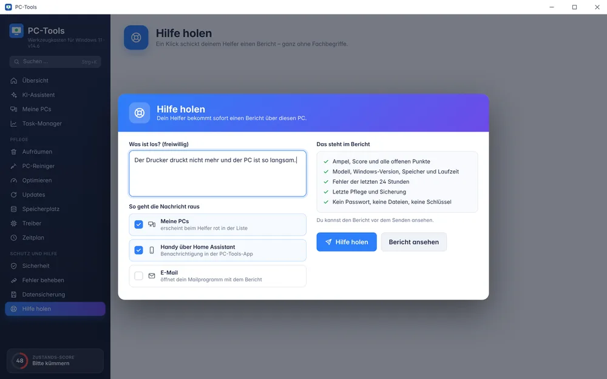
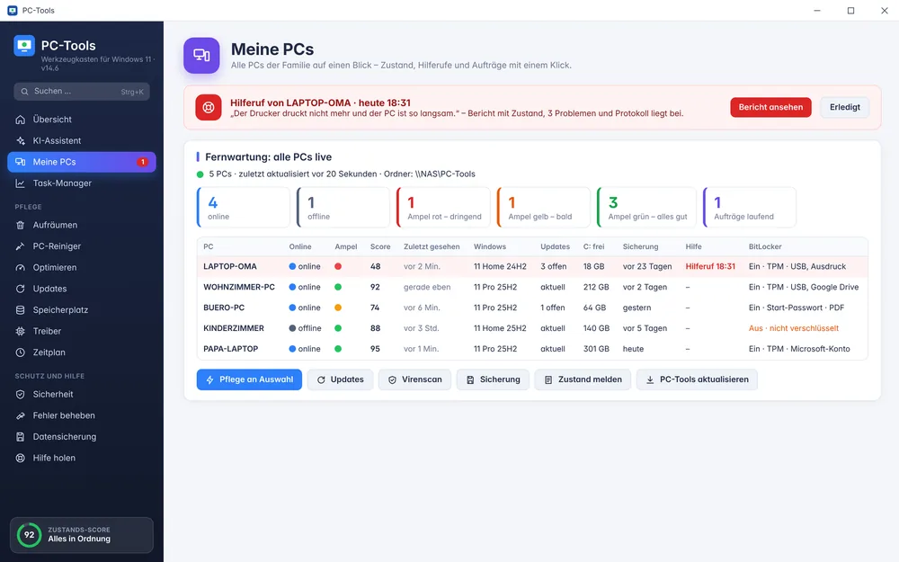
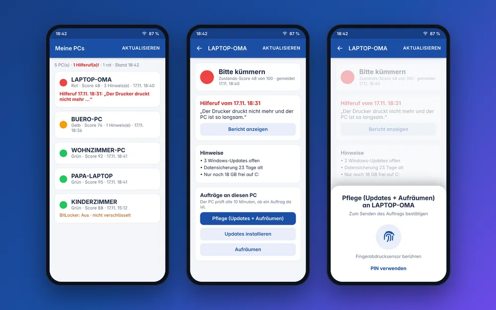
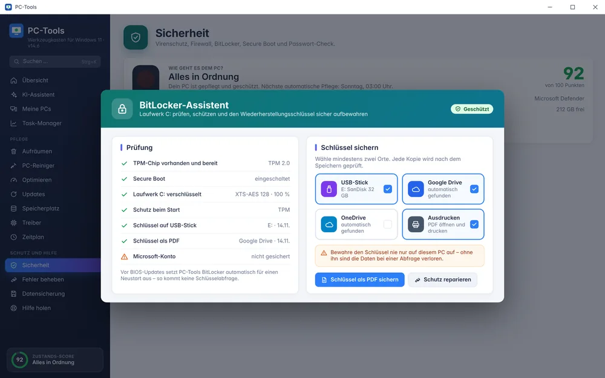
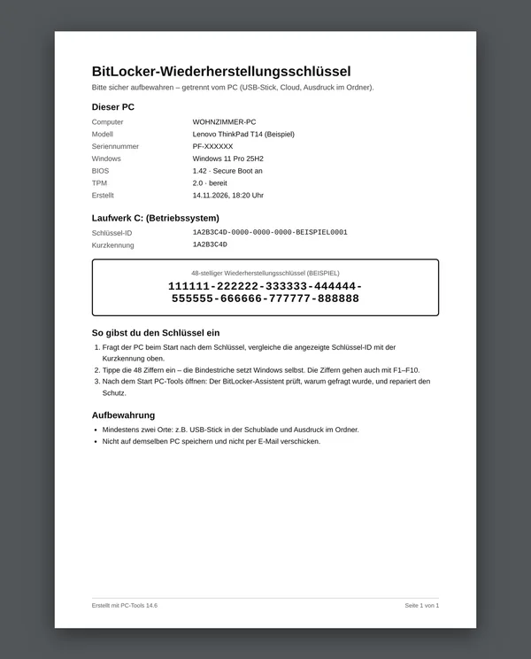

PC-Tools ist ein kostenloses Open-Source-Werkzeug für Windows: Updates, Treiber, Aufräumen, Reparatur, Datensicherung und Sicherheit an einem Ort – so einfach, dass es auch Eltern und Großeltern bedienen können.

Score 92 · alles grünAufgeräumt, verständlich und auf Deutsch – vom Einfach-Modus für die Großeltern bis zur Fernwartung für den Familien-Helfer.
Die Ampel und der Zustands-Score von 0 bis 100 zeigen sofort, ob alles stimmt. Ein Klick auf „Punkte beheben“ erledigt alles, was automatisch geht – und sagt ehrlich, was nur von Hand geht.

Keine Menüs und keine Fachbegriffe. Grün heißt: alles gut. Bei Gelb oder Rot repariert „Alles reparieren“ den PC, und „Hilfe holen“ benachrichtigt den Helfer in der Familie.

Ein Klick schickt dem Helfer einen verständlichen Bericht: Zustand, Probleme, Fehler der letzten Tage und das Protokoll. Er kommt in „Meine PCs“, als Handy-Benachrichtigung oder per E-Mail an.

Jeder PC meldet seinen Zustand an einen gemeinsamen Ordner (z.B. NAS) oder an Home Assistant. Hilferufe erscheinen rot – Pflege, Updates, Virenscan oder Sicherung schickst du mit einem Klick an den PC.

Die App zeigt alle PCs mit Ampel, meldet Hilferufe aufs Handy und schickt Aufträge – über deinen Home Assistant, ohne fremde Cloud. Geschützt mit Fingerabdruck oder Handy-PIN.

Der BitLocker-Assistent prüft TPM und Secure Boot, verschlüsselt und sichert den Wiederherstellungsschlüssel an mehreren Orten. Vor BIOS-Änderungen wird BitLocker automatisch ausgesetzt – so kommt keine überraschende Schlüsselabfrage.

Alle Angaben zum PC, Schlüssel-ID, Kurzkennung und der 48-stellige Schlüssel groß lesbar, dazu eine Schritt-für-Schritt-Anleitung für den Notfall. Jede gespeicherte Kopie wird geprüft.
Abbildungen: nachgebaute Darstellungen der Oberfläche von Version 14.6 mit Beispieldaten (PC-Namen, Werte und Schlüssel sind ausgedacht). Das Programm passt sich an die Windows-Anzeige an und kann leicht abweichen.
Viele „PC-Optimierer“ machen Angst und wollen dann Geld. PC-Tools ist anders.
Alles, was ein Windows-PC regelmäßig braucht – automatisch im Hintergrund oder mit einem Klick.
Eine Ampel mit Score von 0 bis 100 zeigt, wie es dem PC geht. Ein Klick behebt alles, was sich automatisch beheben lässt.
Windows-, Programm- und Treiber-Updates (winget, Windows Update, Hersteller-Pakete von Lenovo, HP und Dell) inklusive BIOS-Prüfung.
Temporäre Dateien, Update-Reste und Autostart-Bremsen – mit Startzeit-Analyse, die zeigt, was den Start wirklich verlangsamt.
Virenschutz, Firewall, Secure Boot und TPM prüfen, Passwort-Check gegen Datenlecks (das Passwort verlässt den PC nie), Netzwerk-Scan nur im eigenen Netz.
Prüft, verschlüsselt und sichert den Wiederherstellungsschlüssel an mehreren Orten – auch als ausführliche PDF für USB-Stick, Cloud oder Ausdruck.
Dateien und komplette Systemabbilder auf USB-Platte oder NAS, mit Zeitplan und Kontrolle, ob die Sicherung wirklich aktuell ist.
Ein Klick schickt dem Helfer einen Bericht mit Zustand, Problemen und Protokoll – über „Meine PCs“, Handy-Nachricht, Home Assistant oder E-Mail.
Nur eine große Ampel und zwei Knöpfe: „Alles reparieren“ und „Hilfe holen“. Ideal für Einsteiger.
Erklärt Fehlermeldungen, Bluescreens und Ereignisse in einfachen Worten – kostenlos lokal mit Ollama oder mit einem KI-Anbieter deiner Wahl.
Keine Anmeldung, kein Konto, kein Abo.
Auf der Download-Seite die Datei PC-Tools-Setup-….exe laden (oder die portable ZIP ohne Installation).
Setup starten. Zeigt Windows „Der Computer wurde durch Windows geschützt“: auf Weitere Informationen und Trotzdem ausführen klicken (siehe Fragen unten).
Sprache und Lite- oder Vollversion wählen, dann den grünen Knopf „Alles automatisch“ drücken – den Rest erledigt der Zeitplan.
Alle PCs auf einen Blick: Ampel, Score, Hilferufe, BitLocker- und Sicherungsstand, Aufträge wie „Pflege“ oder „Updates“ – über einen gemeinsamen Ordner (NAS) oder Home Assistant.
Jeder PC meldet seinen Zustand. Hilferufe erscheinen rot mit Bericht – Aufträge gehen mit einem Klick an den PC.
Die PC-Tools-App zeigt die Ampel aller PCs, meldet Hilferufe aufs Handy und schickt Aufträge – über deinen Home Assistant. APK bei den Releases (Tag „android-v…“).
Per MQTT oder REST erscheint jeder PC als Gerät mit Sensoren – für eigene Dashboards und Automationen.
PC-Tools sendet nichts nach Hause. Keine Telemetrie, keine Nutzerdaten, keine Werbung. Verbindungen ins Internet gibt es nur für Funktionen, die du selbst nutzt (z.B. Updates) – alles aufgelistet in der Datenschutz-Erklärung. Der Quelltext ist offen und für jeden prüfbar.
Die Warnung (SmartScreen) erscheint bei neuen Programmen, die noch nicht oft heruntergeladen wurden bzw. noch keine kostenpflichtige Code-Signatur haben. PC-Tools ist Open Source; jede Version wird automatisch aus dem öffentlichen Quelltext gebaut. Klicke auf „Weitere Informationen“ und „Trotzdem ausführen“. Mit mehr Downloads verschwindet die Warnung von selbst.
Nichts. Es ist kostenlos und quelloffen – privat und in Firmen, ohne Abo und ohne Werbung.
Nein. Es gibt keine Telemetrie. Verbindungen ins Internet gibt es nur für Funktionen, die du selbst nutzt (z.B. Updates) – alles aufgelistet in der Datenschutz-Erklärung.
Nein. Der Knopf „Alles automatisch“ bzw. der Einfach-Modus genügt. Wer mehr will, findet in der Vollversion über 40 Seiten mit Werkzeugen.
Ja. Windows 10 und 11 (64 Bit) werden voll unterstützt, für Linux gibt es eigene Pakete (.deb / .tar.gz).
Über die Issues oder die Diskussionen auf GitHub – Übersetzungsfehler direkt aus PC-Tools heraus.
PC-Tools wird laufend weiterentwickelt. Die letzten Versionen:
Neu: Was-ist-neu-Fenster nach jedem Update - zeigt alles, was seit deiner letzten Version dazugekommen ist. Neu: BIOS-Prüfung für Lenovo, HP und Dell - PC-Tools fragt einmal am Tag den Katalog des Herstellers, zeigt ein neues BIOS in der Ampel und meldet es. Neu in Meine PCs: Spalte BitLocker - ist BitLocker an, wie geschützt (TPM/Start-Passwort) und wo ist der Schlüssel gesichert (USB, Cloud, Ausdruck, Microsoft-Konto ...). Der Schlüssel selbst wird nie übertragen. Neu: Home Assistant bekommt Score, BitLocker, BIOS und offene Hilferufe - und PC-Tools kann Aufträge aus Home Assistant bzw. der neuen Android-App annehmen (Pflege, Updates, Aufräumen, Virenscan, Sicherung, Zustand, Selbstupdate).
BitLocker-Schlüssel als PDF - Seite Sicherheit > "Schlüssel als PDF sichern". Die PDF enthält alle Angaben zum PC (Modell, Seriennummer, Windows, BIOS, Secure Boot, TPM), für jedes verschlüsselte Laufwerk Schlüssel-ID, Kurzkennung und den 48-stelligen Schlüssel groß lesbar, eine Anleitung zur Eingabe und Tipps zur Aufbewahrung. Speichern mit einem Klick auf USB-Stick, in Cloud-Ordner (OneDrive, Google Drive, Dropbox, Nextcloud, iCloud - werden automatisch gefunden) oder einen anderen Ordner/NAS, jede Kopie wird geprüft. Der BitLocker-Assistent legt die PDF jetzt automatisch neben jede Schlüsseldatei und öffnet sie zum Drucken.
BitLocker wird jetzt überwacht - rote Warnung, wenn BitLocker dauerhaft ausgesetzt ist (Daten ungeschützt) oder nur noch der Wiederherstellungsschlüssel übrig ist (Abfrage bei jedem Start). Der BitLocker-Assistent repariert das mit einem Klick: zuerst über den TPM-Chip - geht das wegen eines BIOS-Fehlers nicht, mit einem Start-Passwort. Läuft BitLocker mit Start-Passwort, achtet PC-Tools auf ein neues BIOS (bei Lenovo direkt im Hersteller-Katalog) und gibt Bescheid, sobald sich der TPM-Schutz erneut lohnt.
Ändert PC-Tools im BIOS Secure Boot, TPM oder den Startmodus, wird BitLocker vorher automatisch für 2 Neustarts ausgesetzt - so fragt Windows danach nicht mehr nach dem Wiederherstellungsschlüssel. Der Hinweis bei "Punkte beheben" zu Secure Boot erklärt das jetzt auch für Änderungen direkt im BIOS-Menü.
Updates kommen jetzt auch ohne bzw. mit einem alten GitHub-Token an (öffentliches Repository). KI mit Ollama: Ist das gewählte Modell nicht geladen, nimmt PC-Tools automatisch ein vorhandenes oder lädt es selbst.
Port-Scanner und Sicherheits-Scan prüfen nur noch Adressen im eigenen Netz (z.B. 192.168.x.x, 10.x.x.x) - fremde Adressen im Internet werden nie gescannt. Das Setup zeigt vor der Installation die Datenschutz-Hinweise.
Alle neuen Funktionen seit 14.0 (KI-Assistent, Punkte beheben, Startzeit-Analyse, Hilfe holen, Einfach-Modus, Passwort-Check, BitLocker-Assistent) sind jetzt in allen 12 Sprachen übersetzt.
Neu auf der Seite Sicherheit - Passwort-Check: prüft einzelne Passwörter oder alle aus dem Browser exportierten gegen bekannte Datenlecks (Have I Been Pwned). Das Passwort verlässt den PC nie, nur 5 Zeichen seines Fingerabdrucks. Zeigt auch mehrfach verwendete und zu einfache Passwörter und löscht die Export-Datei danach sicher. Neu: BitLocker-Assistent - prüft TPM, Edition, Secure Boot und Netzteil, verschlüsselt und legt den Wiederherstellungsschlüssel an mehreren Orten ab (USB-Stick, Ordner/NAS, Microsoft- oder Firmenkonto, Ausdruck, Lizenz-Tresor) und kontrolliert jede Kopie.
Neu "Hilfe holen" - beim Zustands-Score und im Einfach-Modus. Ein Klick schickt dem Helfer einen Bericht (Zustand, Probleme, Fehler der letzten 3 Tage, Protokoll): in "Meine PCs" erscheint ein roter Hilferuf mit Bericht, aufs Handy kommt eine Nachricht (wenn eingerichtet), auf Wunsch wird eine E-Mail vorbereitet - sonst liegt der Bericht auf dem Desktop. Neu: Einfach-Modus für Eltern, Großeltern und Einsteiger - nur eine große Ampel und zwei Knöpfe "Alles reparieren" und "Hilfe holen" (Einstellungen > Stabilität oder beim ersten Start).
Treiber für Geräte mit Problem (z.B. Code 48/28) sucht PC-Tools jetzt gezielt - erst über Windows Update, dann über das offizielle Treiberpaket von HP, Lenovo oder Dell (Seite Geräte und "Punkte beheben"). Neu auf der Seite Autostart: Startzeit-Analyse zeigt, welche Programme, Dienste und Treiber den Start wie viele Sekunden bremsen, und entschärft sie mit einem Klick. Beim Zustands-Score: "Automatisch beheben, wenn der Score unter ... fällt" - nach jedem geplanten Lauf wird erledigt, was sicher automatisch geht, der Rest kommt als Hinweis.
Neuer Knopf "Punkte beheben" beim Zustands-Score - behebt mit einem Klick alles, was automatisch geht (Updates und Treiber nachinstallieren, Aufräumen, Autostart aufräumen, Geräte-Probleme, Virendefinitionen, Firewall) und sagt ehrlich, was nur von Hand geht (z.B. Secure Boot im BIOS). Fehlgeschlagene Updates zählen im Score nur noch, wenn sie seitdem nicht doch erfolgreich installiert wurden.
PC-Tools spricht jetzt 12 Sprachen - Deutsch, English, Español, Français, Italiano, Português (Brasil), Polski, Türkçe, Русский, 简体中文, 日本語 und 한국어. Die Sprache wählst du beim ersten Start oder jederzeit unter Einstellungen > Stabilität > Sprache; auch der KI-Assistent antwortet in deiner Sprache. Die Übersetzungen sind maschinell (KI) erstellt - Fehler bitte über "Übersetzungsfehler melden" mitteilen. Dazu: PC-Tools.exe, Installationsprogramm und die Linux-Ausgabe.
Das Symbol in der Taskleiste ist repariert (eigenes PC-Tools-Symbol in allen Größen, auch beim Anheften). Neu: PC-Tools.exe als Starter und ein Installationsprogramm (PC-Tools-Setup.exe) - und die ersten Sprachen: English, Español, Русский und 简体中文 (Einstellungen > Stabilität > Sprache). Weitere Sprachen folgen mit Version 14.
"Nicht genutzte Programme" entfernt jetzt auch Programme ohne stillen Deinstallationsweg: erst still (MSI, Inno, NSIS, electron-builder, WiX, Squirrel), dann über winget, dann über das Deinstallationsprogramm des Herstellers, bei portablen Programmen ohne Deinstaller werden Ordner (Papierkorb) und Eintrag (gesichert) entfernt. Vorbereitung für die Mehrsprachigkeit von Version 14.
Ein ★ auf GitHub dauert 5 Sekunden und hilft anderen, das Projekt zu finden – und bei der kostenlosen Code-Signatur. Erzähl gern in den Diskussionen, wofür du PC-Tools nutzt.